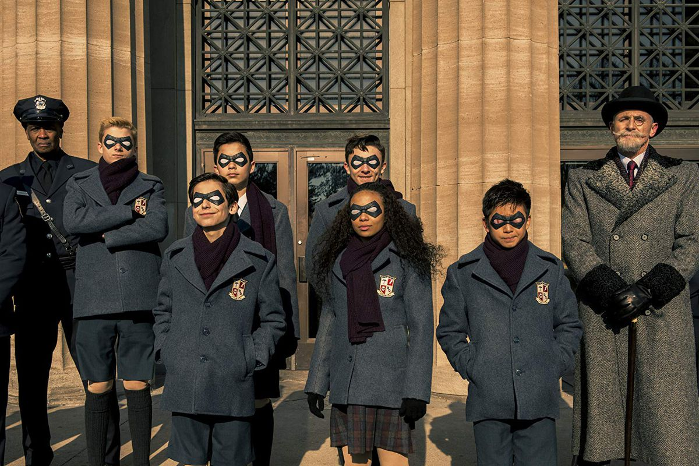

On October 1, 1989, 43 women around the world give birth simultaneously, despite none of them showing any sign of pregnancy until labor began. Seven of the children are adopted by eccentric billionaire Sir Reginald Hargreeves, and turned into a superhero team through what he calls "The Umbrella Academy". Hargreeves gives the children numbers rather than names, but they eventually come to be known as Klaus, Luther, Diego, Allison, Ben, and Vanya. Number Five is never named.[2] While putting six of his children to work fighting crime, Reginald keeps Vanya apart from her siblings' activities, as she seemingly has no powers of her own. In the present day, Luther is an astronaut, Allison is a famous actress, Vanya is a violinist, Klaus is a party animal with a drug addiction, Ben is a ghost only able to converse with Klaus, and Diego has become a vigilante with a penchant for trouble. The estranged siblings learn that Reginald has died and gather for his funeral. Number Five returns from the future, revealing that a global apocalypse is imminent. Meanwhile, the reunited siblings try to uncover the secret of their dysfunctional family while beginning to come apart due to their divergent personalities and abilities.[3]
